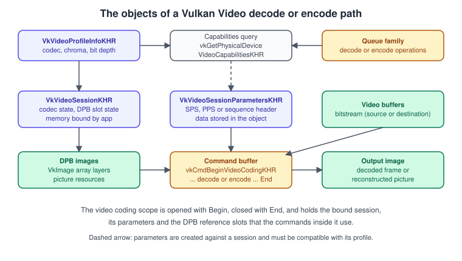
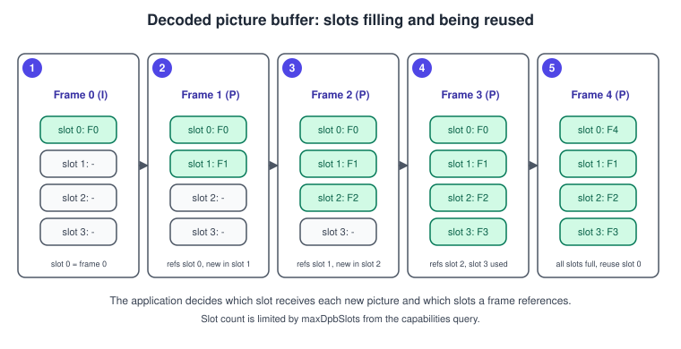
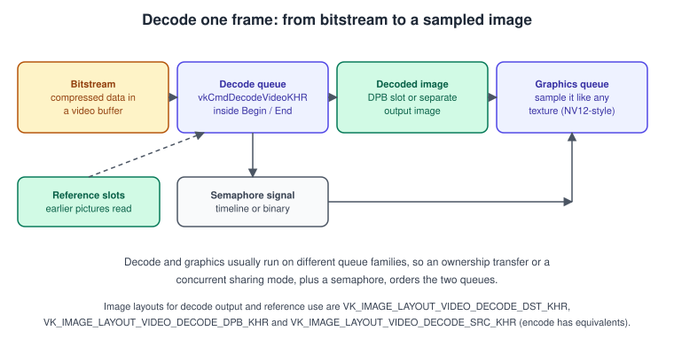

Vulkan Video
|
This content was generated with the assistance of AI and should be verified against the official documentation before being relied on in production. |
Most GPUs contain fixed-function blocks that decode and encode compressed video far more efficiently than shaders or the CPU can. Vulkan Video
lets an application use them from the same API that renders: a decoded frame is a VkImage that a graphics queue can sample without
leaving the GPU, and a rendered frame is an image that an encode queue can compress. This page explains the model (queue families,
profiles, sessions, the decoded picture buffer), the commands that do the work, the synchronisation that connects video and graphics queues,
and a complete decode setup in C.
The general concepts behind this page are in GPU Architecture Basics.
The facts were checked in November 2026. The version documented is Vulkan 1.4 with headers in the 1.4.3xx series and the LunarG SDK 1.4.363.0. Vulkan Video is a family of extensions, not core: you query and enable each of them on the device. Decode is available for H.264, H.265, AV1 and VP9 and encode for H.264, H.265 and AV1. Support differs strongly between GPUs and drivers, so a program must read capabilities at run time and keep a software or platform-decoder fallback. The running example, the Vulkan Bookshelf (C++20, Vulkan-Hpp RAII, VMA, Slang shaders), needs Vulkan 1.3 only; video is an optional side path, for example a looping clip played on a screen behind the shelf, and the main example never depends on it. The code on this page uses the C API because video structure chains are long and the C names match the specification text one to one.
The extension family
Vulkan Video is layered: a codec-independent core, a decode API and an encode API on top of it, and one extension per codec.
| Extension | Role |
|---|---|
|
The core: video profiles and capabilities, video sessions and session parameters, the video coding scope, picture resources and the DPB. |
|
The decode operation |
|
The encode operation |
|
One extension per decode codec. The codec structures wrap the standard-defined headers from the |
|
One extension per encode codec. There is no VP9 encode extension. |
|
Additional features such as inline queries ( |
AV1 encode and VP9 decode are the recent additions: the Khronos extension list is the place to check the status of a codec on the date you read this, because new codec operations arrive as new extensions. The codec extensions share one idea: Vulkan standardises how the hardware is driven, not how a file is read. Parsing containers (MP4, MKV) and bitstream headers is the application’s job, and the parsed standard header structures (sequence parameter sets, picture parameter sets, picture info) are passed to Vulkan.
Queue families and profiles
A video operation runs on a queue family that advertises it. A family can support decode, encode or both, and a given family lists
the codec operations it can execute. You find it by chaining VkQueueFamilyVideoPropertiesKHR into VkQueueFamilyProperties2 and
checking the VK_QUEUE_VIDEO_DECODE_BIT_KHR and VK_QUEUE_VIDEO_ENCODE_BIT_KHR flags of the family, then the
videoCodecOperations bits. The family is often separate from the graphics family, which matters for synchronisation (see below).
A video profile (VkVideoProfileInfoKHR) states what the application will code: the codec operation
(VK_VIDEO_CODEC_OPERATION_DECODE_H264_BIT_KHR, DECODE_H265, DECODE_AV1, DECODE_VP9, ENCODE_H264, ENCODE_H265, ENCODE_AV1), the chroma
subsampling, and the luma and chroma bit depth. A codec-specific structure chained through pNext adds the rest, for example
VkVideoDecodeH264ProfileInfoKHR carries the H.264 profile and the picture layout. Resources that take part in video coding must be
created with a profile or a VkVideoProfileListInfoKHR chained into their create info, so the implementation knows which codec will
touch them. Mixing a resource made for one profile with a session of another is invalid.
#include <vulkan/vulkan.h>
#include <vk_video/vulkan_video_codecs_common.h>
#include <vk_video/vulkan_video_codec_h264std.h>
#include <vk_video/vulkan_video_codec_h264std_decode.h>
#include <stdint.h>
#include <stdio.h>
#include <stdlib.h>
typedef struct {
uint32_t decodeFamily;
int found;
} DecodeQueue;
// Find a queue family that can decode H.264.
DecodeQueue findH264DecodeQueue(VkPhysicalDevice phys) {
uint32_t count = 0;
vkGetPhysicalDeviceQueueFamilyProperties2(phys, &count, NULL);
VkQueueFamilyVideoPropertiesKHR* video = calloc(count, sizeof *video);
VkQueueFamilyProperties2* props = calloc(count, sizeof *props);
for (uint32_t i = 0; i < count; ++i) {
video[i].sType = VK_STRUCTURE_TYPE_QUEUE_FAMILY_VIDEO_PROPERTIES_KHR;
props[i].sType = VK_STRUCTURE_TYPE_QUEUE_FAMILY_PROPERTIES_2;
props[i].pNext = &video[i];
}
vkGetPhysicalDeviceQueueFamilyProperties2(phys, &count, props);
DecodeQueue result = {0, 0};
for (uint32_t i = 0; i < count && !result.found; ++i) {
int isDecode = (props[i].queueFamilyProperties.queueFlags & VK_QUEUE_VIDEO_DECODE_BIT_KHR) != 0;
int h264 = (video[i].videoCodecOperations & VK_VIDEO_CODEC_OPERATION_DECODE_H264_BIT_KHR) != 0;
if (isDecode && h264) {
result.decodeFamily = i;
result.found = 1;
}
}
free(video);
free(props);
return result;
}Capabilities and formats
Always ask the implementation before creating anything. vkGetPhysicalDeviceVideoCapabilitiesKHR takes a profile and fills
VkVideoCapabilitiesKHR, with the decode and codec structures chained to receive the codec-specific limits.
| Capability field | What it limits |
|---|---|
|
The picture sizes the implementation supports for this profile. Streams outside the range cannot be decoded in hardware. |
|
How many DPB slots a session can have. |
|
How many reference pictures one decode or encode operation can use at once. |
|
The alignment that coded extents must respect; the image you allocate must be at least this aligned. |
|
Alignment of the bitstream buffer offset and range. |
|
For decode, whether the DPB and the output picture may be the same image ( |
vkGetPhysicalDeviceVideoFormatPropertiesKHR then lists the image formats and usages for the intended use (decode destination, DPB,
encode source). Do not assume a format: the common 8-bit 4:2:0 format is the two-plane VK_FORMAT_G8_B8R8_2PLANE_420_UNORM, but the
list is device and profile specific.
int queryH264DecodeCapabilities(VkPhysicalDevice phys, VkVideoCapabilitiesKHR* outCaps,
VkVideoDecodeH264CapabilitiesKHR* outH264) {
VkVideoDecodeH264ProfileInfoKHR h264Profile = {
.sType = VK_STRUCTURE_TYPE_VIDEO_DECODE_H264_PROFILE_INFO_KHR,
.stdProfileIdc = STD_VIDEO_H264_PROFILE_IDC_HIGH,
.pictureLayout = VK_VIDEO_DECODE_H264_PICTURE_LAYOUT_PROGRESSIVE_KHR,
};
VkVideoProfileInfoKHR profile = {
.sType = VK_STRUCTURE_TYPE_VIDEO_PROFILE_INFO_KHR,
.pNext = &h264Profile,
.videoCodecOperation = VK_VIDEO_CODEC_OPERATION_DECODE_H264_BIT_KHR,
.chromaSubsampling = VK_VIDEO_CHROMA_SUBSAMPLING_420_BIT_KHR,
.lumaBitDepth = VK_VIDEO_COMPONENT_BIT_DEPTH_8_BIT_KHR,
.chromaBitDepth = VK_VIDEO_COMPONENT_BIT_DEPTH_8_BIT_KHR,
};
outH264->sType = VK_STRUCTURE_TYPE_VIDEO_DECODE_H264_CAPABILITIES_KHR;
outH264->pNext = NULL;
VkVideoDecodeCapabilitiesKHR decodeCaps = {
.sType = VK_STRUCTURE_TYPE_VIDEO_DECODE_CAPABILITIES_KHR,
.pNext = outH264,
};
outCaps->sType = VK_STRUCTURE_TYPE_VIDEO_CAPABILITIES_KHR;
outCaps->pNext = &decodeCaps;
VkResult r = vkGetPhysicalDeviceVideoCapabilitiesKHR(phys, &profile, outCaps);
return r == VK_SUCCESS; // VK_ERROR_VIDEO_PROFILE_*_NOT_SUPPORTED_KHR means: no hardware decode for this profile
}The returned error codes tell why a profile is unsupported (the operation, the format, the codec profile). Treat every one as a normal condition, not an exception.

Video sessions and session parameters
A video session (VkVideoSessionKHR) holds the state needed to code a stream: the codec, the profile, the maximum extent and
the DPB slot state. You create it with vkCreateVideoSessionKHR, giving the queue family, profile, picture formats, the maximum coded extent
and DPB capacity (maxDpbSlots, maxActiveReferencePictures), and the version of the standard header you were built against
(pStdHeaderVersion). Flags such as VK_VIDEO_SESSION_CREATE_PROTECTED_CONTENT_BIT_KHR select protected content and
VK_VIDEO_SESSION_CREATE_INLINE_QUERIES_BIT_KHR allows queries inside the coding scope.
Unlike most Vulkan objects, a session does not own its memory. You query the requirements with vkGetVideoSessionMemoryRequirementsKHR, which
may return several bindings with different memory type bits, allocate each one, and bind them all with vkBindVideoSessionMemoryKHR
before the session may be used. A new session is in the uninitialised state; the first command in the coding scope must be
vkCmdControlVideoCodingKHR with VK_VIDEO_CODING_CONTROL_RESET_BIT_KHR, which moves it to its initial state.
Session parameters (VkVideoSessionParametersKHR) store the codec headers that streams carry: for H.264 and H.265 the sequence and
picture parameter sets, for AV1 the sequence header. You create them with vkCreateVideoSessionParametersKHR from the parsed standard
structures, and the object is bound to the session at vkCmdBeginVideoCodingKHR. When the stream sends a new parameter set, you do not
edit the object: create a new one (or update it with vkUpdateVideoSessionParametersKHR where the codec allows adding sets) and bind
that.
typedef struct {
VkVideoSessionKHR session;
VkDeviceMemory* memory;
uint32_t memoryCount;
} VideoSession;
int createH264DecodeSession(VkDevice device, VkPhysicalDevice phys, uint32_t family,
const VkVideoProfileInfoKHR* profile, const VkVideoCapabilitiesKHR* caps,
VkFormat pictureFormat, VkExtent2D maxExtent, VideoSession* out) {
VkExtensionProperties stdHeader = {0};
snprintf(stdHeader.extensionName, VK_MAX_EXTENSION_NAME_SIZE, "%s", VK_STD_VULKAN_VIDEO_CODEC_H264_DECODE_EXTENSION_NAME);
stdHeader.specVersion = VK_STD_VULKAN_VIDEO_CODEC_H264_DECODE_SPEC_VERSION;
VkVideoSessionCreateInfoKHR ci = {
.sType = VK_STRUCTURE_TYPE_VIDEO_SESSION_CREATE_INFO_KHR,
.queueFamilyIndex = family,
.pVideoProfile = profile,
.pictureFormat = pictureFormat,
.maxCodedExtent = maxExtent,
.referencePictureFormat = pictureFormat,
.maxDpbSlots = caps->maxDpbSlots < 17 ? caps->maxDpbSlots : 17,
.maxActiveReferencePictures = caps->maxActiveReferencePictures < 16 ? caps->maxActiveReferencePictures : 16,
.pStdHeaderVersion = &stdHeader,
};
if (vkCreateVideoSessionKHR(device, &ci, NULL, &out->session) != VK_SUCCESS) return 0;
uint32_t count = 0;
vkGetVideoSessionMemoryRequirementsKHR(device, out->session, &count, NULL);
VkVideoSessionMemoryRequirementsKHR* req = calloc(count, sizeof *req);
for (uint32_t i = 0; i < count; ++i) req[i].sType = VK_STRUCTURE_TYPE_VIDEO_SESSION_MEMORY_REQUIREMENTS_KHR;
vkGetVideoSessionMemoryRequirementsKHR(device, out->session, &count, req);
VkBindVideoSessionMemoryInfoKHR* bind = calloc(count, sizeof *bind);
out->memory = calloc(count, sizeof *out->memory);
out->memoryCount = count;
VkPhysicalDeviceMemoryProperties mem;
vkGetPhysicalDeviceMemoryProperties(phys, &mem);
for (uint32_t i = 0; i < count; ++i) {
uint32_t type = 0;
for (; type < mem.memoryTypeCount; ++type)
if (req[i].memoryRequirements.memoryTypeBits & (1u << type)) break; // device-local preferred in real code
VkMemoryAllocateInfo ai = {
.sType = VK_STRUCTURE_TYPE_MEMORY_ALLOCATE_INFO,
.allocationSize = req[i].memoryRequirements.size,
.memoryTypeIndex = type,
};
vkAllocateMemory(device, &ai, NULL, &out->memory[i]);
bind[i] = (VkBindVideoSessionMemoryInfoKHR){
.sType = VK_STRUCTURE_TYPE_BIND_VIDEO_SESSION_MEMORY_INFO_KHR,
.memoryBindIndex = req[i].memoryBindIndex,
.memory = out->memory[i],
.memoryOffset = 0,
.memorySize = req[i].memoryRequirements.size,
};
}
VkResult r = vkBindVideoSessionMemoryKHR(device, out->session, count, bind);
free(req);
free(bind);
return r == VK_SUCCESS;
}The two clamps (17 and 16) in the example are arbitrary upper bounds to keep the arrays small; the capability values are what the hardware actually supports and are the numbers to use. In production code, allocate session memory through a general allocator and pick the memory type whose properties match the requirement (usually device-local) rather than the first allowed type, as shown in Memory: Heaps, Types and VMA.
The decoded picture buffer
Video codecs predict a frame from previously decoded ones. The decoded picture buffer (DPB) is the set of pictures that are kept as
references. In Vulkan it is an indexed set of slots, numbered from 0, whose state the session tracks (inactive, or active holding a
picture). The backing storage is yours: each slot is mapped to a video picture resource (VkVideoPictureResourceInfoKHR), a
VkImageView (or a layer of an array image) with codedOffset, codedExtent and baseArrayLayer. A typical allocation is one
array image with one layer per slot.

The application decides which slot receives each decoded picture (the setup slot) and which slots a picture refers to (reference slots). The stream’s own picture management (for H.264, the reference marking in the slice headers) drives these decisions, and mapping the stream’s picture identifiers to slot indices is the core bookkeeping of any decoder. Mistakes here do not usually crash: they decode with the wrong reference and the image smears. A slot index of -1 in the begin-coding info marks a slot that will be set up by the following operation.
The video coding scope and a decode
Video commands only exist inside a video coding scope, opened by vkCmdBeginVideoCodingKHR (which names the session, the parameters
and the reference slots that are active in the scope) and closed by vkCmdEndVideoCodingKHR. In between you record
vkCmdControlVideoCodingKHR (reset, rate control) and the codec operations. The video commands are recorded into a command buffer
allocated from a pool of the video queue family.

typedef struct {
VkImageView outputView; // VK_IMAGE_USAGE_VIDEO_DECODE_DST_BIT_KHR image view
VkImage outputImage;
VkImageView dpbView[17]; // views of the DPB array layers
uint32_t dpbSlotCount;
} DecodeTargets;
void recordH264Decode(VkCommandBuffer cmd, const VideoSession* vs, VkVideoSessionParametersKHR params,
const DecodeTargets* t, VkBuffer bitstream, VkDeviceSize bitstreamOffset,
VkDeviceSize bitstreamRange, const StdVideoDecodeH264PictureInfo* stdPicture,
const StdVideoDecodeH264ReferenceInfo* stdRefs, const int32_t* refSlotIndices,
uint32_t refCount, int32_t setupSlot, VkExtent2D coded, int firstUse,
const uint32_t* sliceOffsets, uint32_t sliceCount) {
// Picture resources: output and DPB entries.
VkVideoPictureResourceInfoKHR out = {
.sType = VK_STRUCTURE_TYPE_VIDEO_PICTURE_RESOURCE_INFO_KHR,
.codedOffset = {0, 0},
.codedExtent = coded,
.baseArrayLayer = 0,
.imageViewBinding = t->outputView,
};
VkVideoPictureResourceInfoKHR setupRes = out;
setupRes.imageViewBinding = t->dpbView[setupSlot];
VkVideoDecodeH264DpbSlotInfoKHR setupH264 = {
.sType = VK_STRUCTURE_TYPE_VIDEO_DECODE_H264_DPB_SLOT_INFO_KHR,
.pStdReferenceInfo = &stdRefs[refCount], // reference info of the picture being set up
};
VkVideoReferenceSlotInfoKHR setup = {
.sType = VK_STRUCTURE_TYPE_VIDEO_REFERENCE_SLOT_INFO_KHR,
.pNext = &setupH264,
.slotIndex = setupSlot,
.pPictureResource = &setupRes,
};
VkVideoReferenceSlotInfoKHR slots[17];
VkVideoPictureResourceInfoKHR slotRes[17];
VkVideoDecodeH264DpbSlotInfoKHR slotH264[17];
for (uint32_t i = 0; i < refCount; ++i) {
slotRes[i] = out;
slotRes[i].imageViewBinding = t->dpbView[refSlotIndices[i]];
slotH264[i] = (VkVideoDecodeH264DpbSlotInfoKHR){
.sType = VK_STRUCTURE_TYPE_VIDEO_DECODE_H264_DPB_SLOT_INFO_KHR,
.pStdReferenceInfo = &stdRefs[i],
};
slots[i] = (VkVideoReferenceSlotInfoKHR){
.sType = VK_STRUCTURE_TYPE_VIDEO_REFERENCE_SLOT_INFO_KHR,
.pNext = &slotH264[i],
.slotIndex = refSlotIndices[i],
.pPictureResource = &slotRes[i],
};
}
// Begin scope: the active reference slots plus the slot about to be set up (index -1 until it is activated).
VkVideoReferenceSlotInfoKHR beginSlots[18];
for (uint32_t i = 0; i < refCount; ++i) beginSlots[i] = slots[i];
beginSlots[refCount] = setup;
beginSlots[refCount].slotIndex = -1;
VkVideoBeginCodingInfoKHR begin = {
.sType = VK_STRUCTURE_TYPE_VIDEO_BEGIN_CODING_INFO_KHR,
.videoSession = vs->session,
.videoSessionParameters = params,
.referenceSlotCount = refCount + 1,
.pReferenceSlots = beginSlots,
};
vkCmdBeginVideoCodingKHR(cmd, &begin);
if (firstUse) {
VkVideoCodingControlInfoKHR reset = {
.sType = VK_STRUCTURE_TYPE_VIDEO_CODING_CONTROL_INFO_KHR,
.flags = VK_VIDEO_CODING_CONTROL_RESET_BIT_KHR,
};
vkCmdControlVideoCodingKHR(cmd, &reset);
}
VkVideoDecodeH264PictureInfoKHR pic = {
.sType = VK_STRUCTURE_TYPE_VIDEO_DECODE_H264_PICTURE_INFO_KHR,
.pStdPictureInfo = stdPicture,
.sliceCount = sliceCount,
.pSliceOffsets = sliceOffsets,
};
VkVideoDecodeInfoKHR decode = {
.sType = VK_STRUCTURE_TYPE_VIDEO_DECODE_INFO_KHR,
.pNext = &pic,
.srcBuffer = bitstream,
.srcBufferOffset = bitstreamOffset,
.srcBufferRange = bitstreamRange,
.dstPictureResource = out,
.pSetupReferenceSlot = &setup,
.referenceSlotCount = refCount,
.pReferenceSlots = slots,
};
vkCmdDecodeVideoKHR(cmd, &decode);
VkVideoEndCodingInfoKHR end = {.sType = VK_STRUCTURE_TYPE_VIDEO_END_CODING_INFO_KHR};
vkCmdEndVideoCodingKHR(cmd, &end);
}Notes on the example. The bitstream buffer must be created with VK_BUFFER_USAGE_VIDEO_DECODE_SRC_BIT_KHR and the profile list in its
create info, and the output image with VK_IMAGE_USAGE_VIDEO_DECODE_DST_BIT_KHR, the DPB images with
VK_IMAGE_USAGE_VIDEO_DECODE_DPB_BIT_KHR, and both with the profile list. When the implementation reports that DPB and output may coincide, a single
image can serve both roles and then also needs the DPB usage bit. The StdVideo... structures come from the codec header
files and are filled from the parsed slice and parameter data: Vulkan does not parse the bitstream for you.
Synchronisation and image layouts
Video decode and encode are queue operations like any other, so they follow the rules of Synchronization and synchronization2 with video-specific stages, accesses and layouts.
| Use | Image layout | Stage and access (synchronization2) |
|---|---|---|
Decode output picture |
|
|
Decode reference picture (DPB) |
|
|
Decode output that is also a DPB entry (coincide mode) |
|
Transition afterwards to a sampled layout for the graphics queue. |
Encode source picture, encode DPB |
The matching |
|
A decoded image is consumed by a graphics queue, and video and graphics queue families usually differ. There are two ways to make
that safe. Create the image with concurrent sharing mode over both families (simpler, but may cost performance on some GPUs), or use
exclusive mode and a queue-family ownership transfer: a release barrier on the decode queue and a matching acquire barrier on
the graphics queue, with a semaphore between the submissions. Because the decode output is a multi-planar format (for example two planes
of 4:2:0 data), sampling it requires a sampler Y’CbCr conversion object (VkSamplerYcbcrConversion, core since 1.1) that converts
to RGB; the conversion model, range and chroma siting must match the stream’s colour description.
The sequence for a playback frame therefore has four parts: record and submit the decode on the video queue (signalling a timeline value), submit a graphics frame that waits on that value, transition or acquire the image, and finally sample it. Using timeline semaphores as described in Timeline Semaphores and Frames in Flight keeps this short. Never reuse a DPB layer that a later decode still references, and never overwrite the bitstream buffer before the decode that reads it has finished: with several frames in flight, use a ring of bitstream buffers.
Encode
Encoding mirrors decoding with the data flowing the other way. The same session, parameters, DPB and coding scope structure apply, and
the codec operation is vkCmdEncodeVideoKHR with VkVideoEncodeInfoKHR: a destination bitstream buffer
(VK_BUFFER_USAGE_VIDEO_ENCODE_DST_BIT_KHR), the source picture resource (an image with VK_IMAGE_USAGE_VIDEO_ENCODE_SRC_BIT_KHR), the
setup slot for the reconstructed picture that later frames reference, and the reference slots. The codec structures carry the
standard-defined picture info (picture type, reference lists, quantisation).
Encode adds three concerns that decode does not have.
-
Rate control.
vkCmdControlVideoCodingKHRwithVK_VIDEO_CODING_CONTROL_ENCODE_RATE_CONTROL_BIT_KHRand aVkVideoEncodeRateControlInfoKHRselects the mode (disabled, constant bit rate, variable bit rate) and the per-layer bit rates and frame rates. Rate control state is part of the session and persists until changed. -
Feedback. How many bytes the encoder wrote is not known until it finishes, so you use a query pool of type
VK_QUERY_TYPE_VIDEO_ENCODE_FEEDBACK_KHR(or inline queries with video maintenance 1) to read the written offset and size, and the size is what you hand to the muxer. -
Parameter sets. For H.264 and H.265 the encoder can produce the sequence and picture parameter sets from the session parameters, retrieved with
vkGetEncodedVideoSessionParametersKHR, which you write ahead of the first frame in the container.
Encoding a rendered frame means the render queue writes an image that the encode queue then reads, so the same ownership and layout rules apply in reverse. For the Bookshelf, recording a gameplay clip means converting the final frame to the encoder’s input format (a compute pass), encoding it, and muxing the bitstream; this is a sample-sized exercise and is not part of the main steps.
Common mistakes
-
Assuming support. A GPU may decode H.264 but not AV1; a driver may support decode but not encode. Query every profile.
-
Creating images or buffers without the video usage flags or the profile list, which the validation layer reports as an invalid profile match.
-
Using a coded extent that is not aligned to
pictureAccessGranularity, or larger than the session’s maximum. -
Sharing one command pool between a graphics queue family and the video queue family. A pool belongs to one family.
-
Forgetting the reset control command on the first use of a session, or after the stream changes resolution (create a new session for a stream with a larger maximum extent).
-
Forgetting that video queues need their own queue creation: ask for a queue of the video family when creating the device.
-
Treating the standard header version as a detail. The
pStdHeaderVersionyou pass must match the extension specification version you compiled against.
Run with the validation layer (see Validation and Debug Utils): video validation covers the profile matching, the slot bookkeeping and the layout rules, which are otherwise very hard to debug.
Performance notes
-
Hardware decode costs little graphics time, but the output must cross queue families: batch frames and avoid a round trip to the CPU.
-
Use the coincide mode for the DPB and output when the implementation supports it, to save memory and a copy.
-
Keep the DPB as small as the stream needs (the stream’s maximum number of reference frames plus the current picture).
-
Decode into array layers of one image rather than many images; it keeps descriptors and barriers simple.
-
Prefer a ring of bitstream buffers in host-visible memory; the decoder reads it directly.
-
On a system with an integrated GPU, encode and decode blocks are often separate engines from the 3D engine, so overlap the work.
Where the books are outdated
Neither book covers video: Vulkan Video was added to the API after both were published.
| Topic | VPG and VCB (Vulkan 1.0) | Today |
|---|---|---|
Video decode and encode |
Not covered by either book; media was left to external libraries. |
The |
Queue families |
Graphics, compute and transfer (VPG ch. 3, VCB ch. 1 and 3). |
Add decode and encode capabilities, and ownership transfers between families matter for video. |
Barriers and layouts |
|
synchronization2 stages |
Multi-planar images |
Not part of the concept list of either book. |
Sampler Y’CbCr conversion (core since 1.1) and multi-planar formats are the normal way to read a decoded frame. |